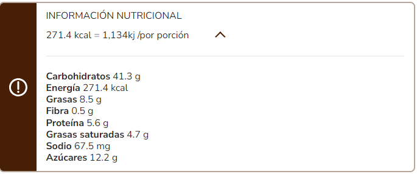

Arroz con Leche Recipe

Description
Prepare with this rice pudding, a delicious dessert that everyone loves and give it a different touch
Ingredients
- 2 cups of water (500 ml)
- cup of rice (250 g)
- 1 cinnamon stick (5 g)
- 2 cups of milk (500 ml)
- 1/2 cup of LA LECHERA® CONDENSED MILK (140 g)
- 1 cup of NESTLÉ® MILK CREAM (240 g)
- 3 tablespoons of raisins (30 g)
Steps
STEP 1 Mix the rice pudding ingredients
- In a pot over low heat, cook the water, cinnamon stick and rice for 15 minutes until it absorbs most of the liquid.
STEP 2 Add the milk
- Add the milk and with a spoon stir constantly.
STEP 3 Add the condensed milk
- Add the LA LECHERA® CONDENSED MILK and continue stirring until the rice softens and takes on a creamy consistency.
STEP 4 Mix the milk cream
- Add the NESTLÉ® MILK CREAM and cook, stirring constantly, for 4 more minutes.
STEP 5 Integrate the raisins
- Finally, add the raisins and stir to integrate everything. Turn off the heat and remove the pot.
STEP 6 Fill the individual molds with the mixture
- This is a recipe that you can serve hot or cold. Pour the mixture into 8 equal portions and to decorate you can sprinkle ground cinnamon on top.
- Making rice pudding has never been so easy!
